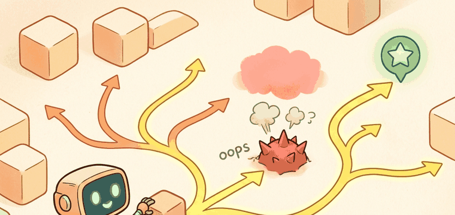

Sampling-based planning is useful when the planner can explain the accepted path and the safety reason each rejected path failed.
A Local Planner With Commitment Issues

Sampling-based planning: RRT, RRT*, PRM turns maps and goals into constrained motion. The planner is not searching for a pretty line; it is choosing a feasible commitment under geometry, dynamics, uncertainty, moving obstacles, and recovery rules.
Problem First
High-dimensional robot motion rarely fits neatly into a grid. A manipulator, drone, or car-like robot may need to search continuous configuration space, where discretizing everything becomes expensive or misleading.
Sampling-based planners trade exhaustive enumeration for random coverage. RRT grows a tree toward random samples, RRTstar rewires toward asymptotic optimality, and PRM builds a reusable roadmap. Collision checking is the core cost center.
A sampled path is a hypothesis until collision checking and control tracking both agree.
Formal Model
Most navigation methods can be read as constrained search or optimization:
$$ q_{\mathrm{new}}=\mathrm{steer}(q_{\mathrm{near}},q_{\mathrm{rand}},\eta),\quad q_{\mathrm{new}}\in C_{\mathrm{free}} $$
The objective names feasible connection to the goal; constraints are collision, steering feasibility, clearance, dynamic limits, and planning-time budget.
- Define configuration variables and bounds, including orientation when it affects collision.
- Sample states, find nearest neighbors, and steer with a step size or local planner.
- Reject edges that collide or violate dynamics.
- For RRTstar or PRM, rewire or connect neighbors to improve path quality.
Worked Diagnostic
Code Fragment 1 isolates sampling-planner invariants: valid sample, nearest neighbor, collision-free edge, and extracted path. The point is to catch geometry bugs before using OMPL.
# One RRT steering step in a 2D configuration space.
# The step-size limit prevents the tree from jumping through obstacles.
import numpy as np
q_near = np.array([1.0, 1.0])
q_rand = np.array([4.0, 5.0])
eta = 1.5
direction = q_rand - q_near
q_new = q_near + eta * direction / np.linalg.norm(direction)
print(np.round(q_new, 2))Expected output interpretation. The new node lands partway toward the random sample, not at the sample itself, because the steering radius limits one expansion step to a feasible local move. In a real planner this intermediate state is the one that gets collision-checked, which is why the exact coordinates of `q_new` matter more than the original sampled target.
Tool Workflow
OMPL provides maintained implementations of RRT, RRTstar, PRM, KPIECE, and kinodynamic planners, while MoveIt and Nav2 integrations connect planners to robots. The shortcut replaces custom nearest-neighbor, sampling, and collision-check plumbing.
Keep the tiny RRT or PRM implementation as a regression test for sampling, nearest neighbor, collision checks, and path extraction. Use OMPL or MoveIt 2 for production planning.
Replay narrow passages, moving obstacles, localization offsets, invalid steering assumptions, and actuator limits. Sampling success in configuration space is not enough if the robot cannot track the path.
Log sampled states, rejected edges, collision checks, nearest-neighbor calls, path smoothing, clearance, and controller tracking. Those fields show whether failure came from sampling, collision checking, or execution.
Freeze state space, sampler, collision checker, steering function, goal bias, smoothing, robot footprint, and dynamics assumptions before comparing sampling planners.
Current research focuses on learned sampling distributions, neural collision checking, kinodynamic planning for agile systems, and combining sampling planners with trajectory optimization for smoother execution.
Sampling-based planning is useful when the planner can explain the accepted path and the safety reason each rejected path failed.
Can you state the search space, cost function, constraints, replanning trigger, controller interface, and failure metric for sampling-based planning: rrt, rrt*, prm? If not, the planner is not specified enough to deploy.
Sampling-based planning: RRT, RRT*, PRM is ready for embodied use when route quality, dynamic feasibility, local control, and recovery behavior are measured in the same replay.
Run the panel with narrow passage, cluttered open area, and changed obstacle. Report solution rate, path cost, clearance, planning time, smoothing effect, and whether the controller can track the sampled path.
What's Next?
Continue to Section 30.4: Local planning, where this planning contract connects to the next embodied capability.
Section References
LaValle, S. M. "Planning Algorithms." Cambridge University Press, 2006. http://lavalle.pl/planning/
Open textbook reference for graph search, sampling-based planning, configuration spaces, and kinodynamic planning.
OMPL Project. "Open Motion Planning Library." Official documentation. https://ompl.kavrakilab.org/
Primary tool reference for sampling-based planners such as RRT, RRTstar, PRM, and kinodynamic variants.
ROS 2 Navigation Project. "Nav2 documentation." Official documentation. https://navigation.ros.org/
Primary documentation for global planners, controllers, costmaps, behavior trees, and recovery behaviors.